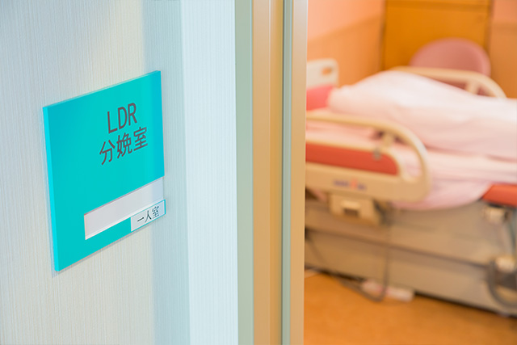

立会い分娩

近年、夫立会い分娩は急速に広がっています。
当院で分娩される方の９割程度のご夫婦が立会い出産を選択され、多くの方から立ち会ってよかったという声をいただいています。
さらに、当院では、希望がある場合、お子さんやご親族の立会いも可能です。
ただし、赤ちゃんへの感染を防ぐため、発熱・感冒症状など健康上問題のある方は立会いできませんのであらかじめご了解ください。
042-484-2626お気軽にお電話ください
妊婦健診から分娩・帝王切開まで、すべて常勤の女性医師が担当します。女性の視点に立ったきめ細やかなケアを心がけています。
助産師外来を積極的に活用し、医師と助産師で情報を共有しつつ、あなたらしいお産の実現をサポートします。
母児同室・母乳栄養を推進しています。
赤ちゃんのデリケートな肌に配慮して布おむつを採用しています。
産科入院中の食事をリニューアルしました。栄養士監修の元、母乳栄養に配慮し、野菜を沢山使用した豪華な献立で、毎日のお食事をお楽しみ頂けます。
完全個室制ですので、お子様やご家族との面会も気兼ねなくしていただけます。ただし、発熱や体調不良などのない方に限ります。
産後にリフレクソロジー（足裏のトリートメント）でリラックスタイムを体験していただけます。
近年、夫立会い分娩は急速に広がっています。
当院で分娩される方の９割程度のご夫婦が立会い出産を選択され、多くの方から立ち会ってよかったという声をいただいています。
さらに、当院では、希望がある場合、お子さんやご親族の立会いも可能です。
ただし、赤ちゃんへの感染を防ぐため、発熱・感冒症状など健康上問題のある方は立会いできませんのであらかじめご了解ください。
赤ちゃんに会うために避けて通れない陣痛ですが、陣痛が始まってから分娩までの時間には個人差もあり、陣痛の感じ方もさまざまです。
当院では硬膜外麻酔を用いた和痛分娩を実施しています。
和痛分娩とは、自然陣痛を硬膜外麻酔という局所麻酔で和らげ、痛みの少ないお産を実現させる方法です。和痛分娩をご希望の方は妊娠中にお申し込みください。
詳細は担当医にお尋ねください。
"あなたらしいお産"をキーワードにスキルを持った経験豊かな助産師が妊娠中のお困り事に対応いたします。
妊娠初期・中期・後期にゆっくりと時間をとり、妊娠中の不安に対してお話を伺ったり、お腹が大きくなるに伴い起こってくる不快な症状を軽減するためのちょっとしたコツをお教えしたりしながら、分娩の準備を整えていきます。
また、産後は乳房のトラブルや育児相談にも対応しております。
完全予約制となっておりますので、あらかじめお電話の上、お気軽にご相談下さいませ。
月２回の木曜日午後に乳児健診外来を行っております。現在は慈恵第三病院小児科医師が担当しています。
当院では無理のないスケジュールで母児同室・母乳栄養を推進しています。
分娩後、まずは十分に休養を取っていただいてから開始します。
お母様の体調やご希望により個別に対応しておりますのでご要望があれば随時お申し出ください。
退院後の母乳の悩みや乳房トラブルについては、助産師による母乳外来をご利用ください。お電話で予約できます。